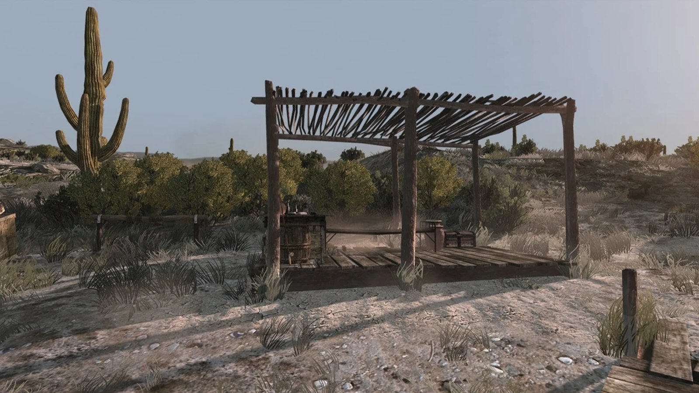
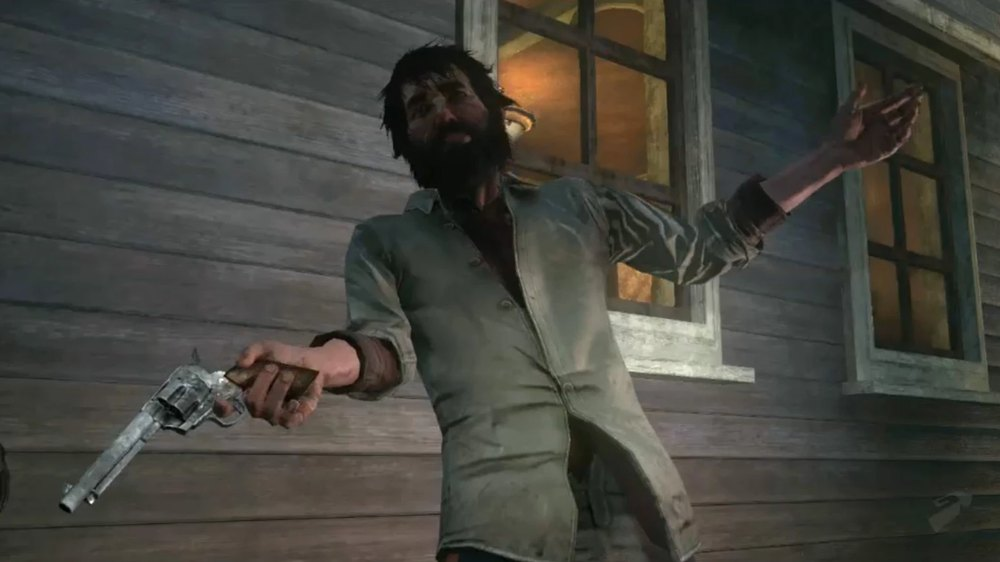
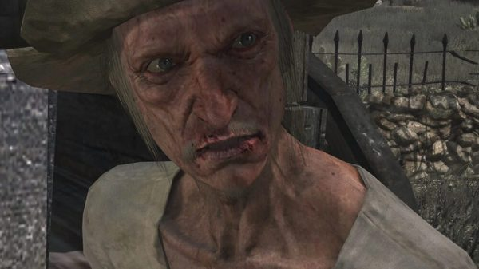
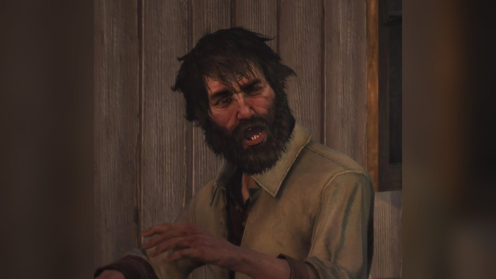
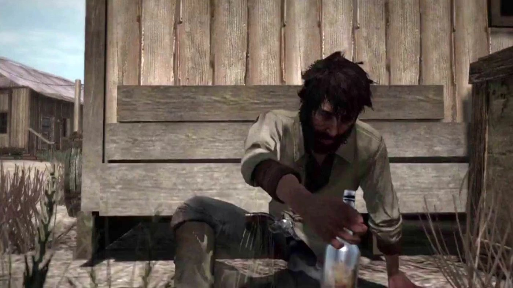
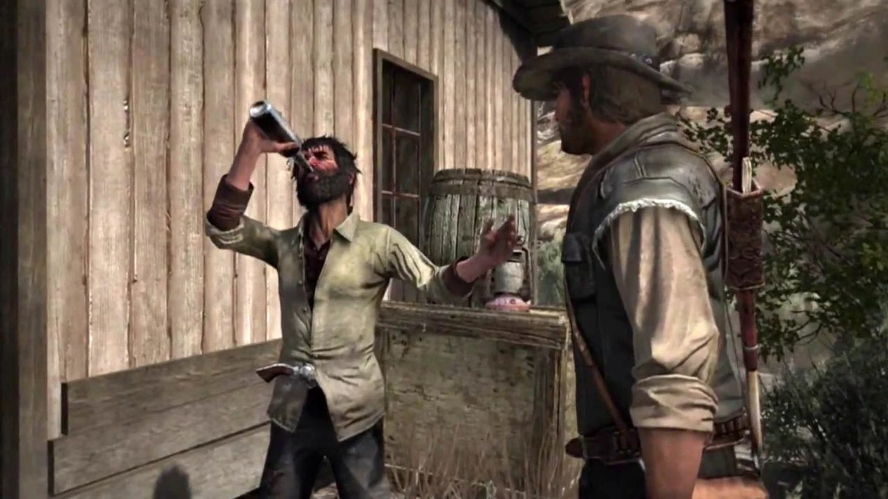
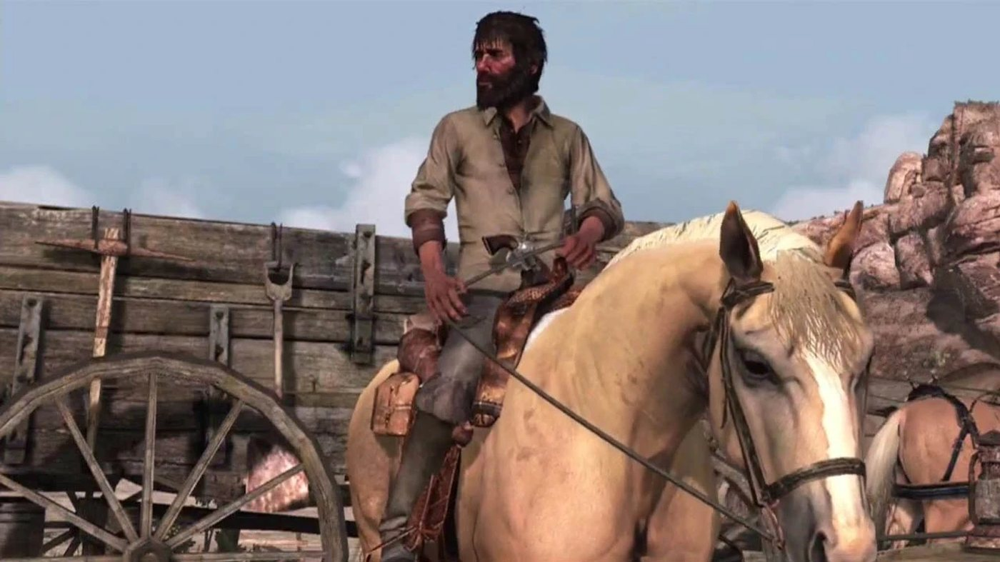
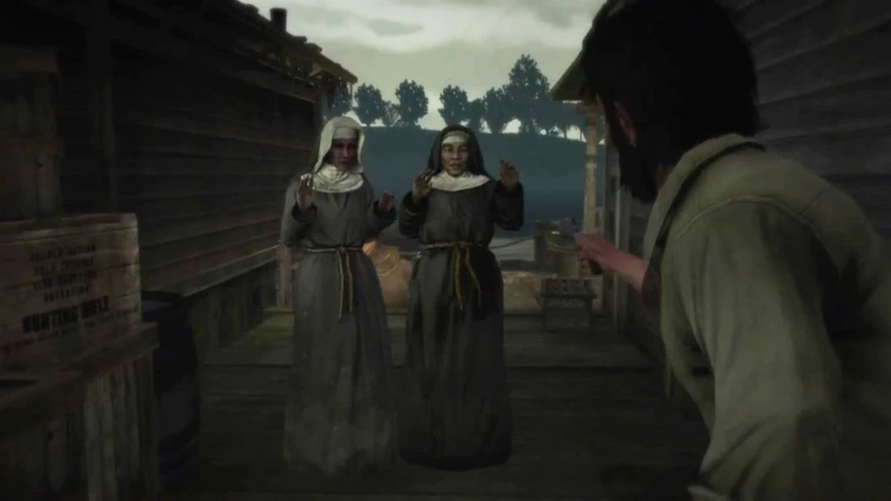
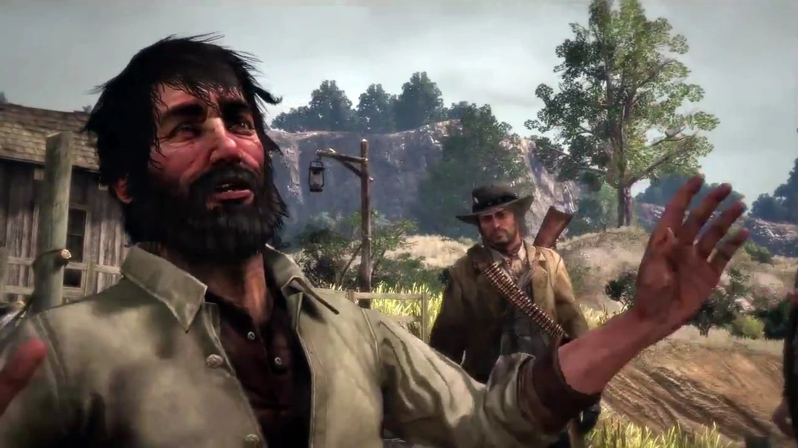
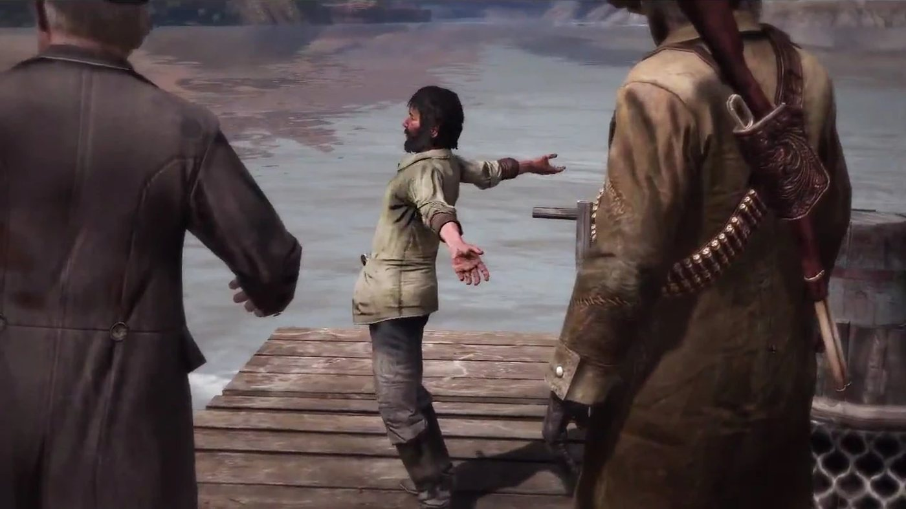

Character · New Austin
Irish
Irish is an Irish arms dealer and heavy drinker in Red Dead Redemption (2010), set in 1911. Nigel West Dickens sends John Marston to him for the firepower needed against Fort Mercer, the hideout of Bill Williamson's gang. John saves him from two former friends who are drowning him in Armadillo. Irish first leads John to a guarded cabin where there is no gun, then leads him to the Gatling gun hidden in a mine at Gaptooth Breach, and later to the ammunition held by his contact Shaky in Thieves' Landing. He promises to fight at Fort Mercer but arrives only once the fight is over.
He then takes John across the river to Mexico on his raft. Gunmen fire on them from the Mexican side, and Irish admits there is a bounty on his head. He leaves John on the other bank. A 1914 newspaper notice, which the Red Dead Wiki attributes to him, reports the accidental death of an Irishman of unknown name in Thieves' Landing. He is voiced by K. Harrison Sweeney.
- Name
- Irish (nickname; no other name is given in the game)
- Also known as
- El Rato, by his own account
- Born
- Not given in the game
- Status
- Last seen in Nuevo Paraíso in 1911; the Red Dead Wiki attributes to him the 1914 notice of an Irishman of unknown name killed by his own gun in a Thieves' Landing outhouse
- Nationality
- Irish
- Residence
- No fixed home; found in Armadillo, Benedict Point and Thieves' Landing (1911)
- Occupation
- Arms and contraband dealer
- Family
- A father who had his throat slit and a mother, by his own account; a brother, according to the Red Dead Wiki
- Associates
- John Marston, Nigel West Dickens, Shaky; formerly Welsh and French
- Weapons
- Cattleman Revolver; Repeater Carbine (Red Dead Wiki)
- Games
- Red Dead Redemption; multiplayer model (Liars and Cheats pack, 2010)
- Voiced by
- K. Harrison Sweeney
Biography
Origins
Irish is an Irish immigrant who deals in weapons and contraband in New Austin. Everything known about his past comes from what he tells John Marston in 1911. He says he met the two men he calls French and Welsh on the boat over to America a few years earlier, and that the three had been as close as thieves ever since. His father used to warn him never to trust a Welshman; Irish adds that his father had his throat slit, without saying by whom. He swears on his poor mother's life. He calls himself a good Catholic.
The Red Dead Wiki adds details that do not appear in the mission transcripts. According to the wiki, Irish says he grew up poor and hungry. The wiki ties his move to the United States to an affair with his brother's wife, and places that remark in "Man is Born Unto Trouble". The same source says he claims to have killed at least one man, whom he calls Twinkle-Toe Dave. According to the wiki's list of his lines, one of the optional conversations on the ride to the lake has him say that he was the brains of the trio and that the other two had become unreliable.
Red Dead Redemption (1911)
In 1911, agents of the Bureau of Investigation hold John Marston's wife and son to force him to hunt down Bill Williamson, who holds Fort Mercer in New Austin. To take the fort, John works with the swindler Nigel West Dickens, who plans to drive him inside hidden in his wagon. Irish appears in five missions of Red Dead Redemption, all at the end of the first act: the three missions of his own strand, "The Assault on Fort Mercer" and "We Shall Be Together in Paradise", which takes John into Mexico. He does not appear after that.
Act I: New Austin
In "Liars, Cheats and Other Proud Americans", Dickens tells John that the plan now needs heavy firepower and sends him to an old friend of his who goes by the name of Irish. He says Irish can usually be found in Armadillo or a nearby town, in the middle of some drinking spree. John concludes that he is dealing with an alcoholic arms dealer.
In "A Frenchman, a Welshman and an Irishman", John walks into a barn in Armadillo where Welsh and French are holding Irish's head under the water of a trough. French says Irish stole their gun and tried to steal their horses. Irish denies everything and blames French, who, he says, is manipulating Welsh. John tells the two men to let him go. They turn on John, and he kills them both. John then explains that Dickens said Irish could help him find a machine gun, and reminds him that he has just saved his life. Irish thanks him, describes the gun as magnificent government issue and leads the way, while saying the saloon is waiting for him. Issue No. 56 of the Blackwater Ledger, on sale later in the story, carries two notices about the men: Alwyn Lloyd, "believed to be of Welsh origin", died by gunshot in Armadillo, and Leander Holland, "known to friends by the name of French", was found dead in the same town.
On the way, Irish calls the two dead men his only friends in the world and says he is glad to see them dead. When John doubts his story, Irish tells him he never asked for help and owes him nothing; John answers that he will decide what Irish owes him. Irish leads him to a ridge above a cabin on Lake Don Julio, where he says the thieves keep the gun inside a shack. Asked to help, he offers to cover John from the ridge, saying he is better at long range. The mission page says he disappears as soon as he sees the guards. John kills the armed men at the cabin alone, goes inside and finds no machine gun, and calls Irish a liar.
At the start of "Man is Born Unto Trouble", John finds Irish passed out against a building in Benedict Point, talking in his sleep to a young lady about her corset. John kicks him awake. Irish says he has found a gun and does not remember being saved; John threatens him if no Gatling gun turns up within the hour. On the road, he swears his intentions were pure and calls the cabin an honest mistake. He then says some miners have been boasting of a machine gun they found and hidden at Gaptooth Breach. John says that Irish and Dickens are as crooked as each other. Irish adds that a wagon will be needed, as the gun is very heavy, which makes John ask how he was supposed to carry it alone the first time.
Outside the mining camp, Irish explains that a lift is used to bring heavy ore out of a shaft, and that John can use it to bring the gun to the surface. He says he would go himself but the mine plays havoc with his sinuses, and leaves to hide the horses and come back with a borrowed flat wagon. John fights his way through the camp and the mine, finds the gun in a mine cart and pushes it to the lift. Irish works the gears and brings John and the gun up, then calls it God's own gun. John rides the cart down the hill to the wagon Irish has brought, and Irish talks of delivering the weapon to Dickens. According to the mission page, Irish then leaves with the wagon to take the gun to him. Issue No. 56 of the Blackwater Ledger later reports gunfire and explosions at the Gaptooth Breach mines, without naming anyone.
The gun cannot be used yet. In Seth Briars's mission "A Gentle Drive with Friends", if John already has the machine gun, Seth passes on a message from Dickens: it has no ammunition. John answers that he will have to pay Irish another visit. In "The Sport of Kings, and Liars", Dickens says the team will be ready once Seth and Irish have delivered their part, and John sums up the team as a con man, a grave robber and a drunk.
At the start of "On Shaky's Ground", John finds Irish in an alley of Thieves' Landing, holding up two nuns at gunpoint. Irish turns his revolver on John and asks who he is. John takes the gun from him, strikes him on the head with its grip and warns him never again to pretend he has forgotten his name or his debt. Irish says he took the nuns for prostitutes. John apologizes to the two women and lets them go. When John says the Gatling gun does not work, Irish claims he was on his way to see him when the drink got the better of him, and says he knows where to find what is missing. Walking through town, John calls him a coward who robs nuns; Irish answers that John has robbed as many innocent people as he has, and that the church has more money than anyone.
Irish takes John to a warehouse in Thieves' Landing, where a contact of his, a stammering man called Shaky, has arranged to supply the ammunition. The front gate is locked although it was meant to be open, so Irish leads John up to a back door. Through it, they hear Shaky being beaten by men who want to know who he works with. Irish sends John in to free him and leaves to fetch a wagon. John frees Shaky, and the two fight their way out to the yard and the ammunition. Irish arrives with the wagon once the shooting has stopped. When Shaky says they are even, Irish answers that Shaky still owes him for morphine pills meant to calm his nerves, and mocks his stammer.
Irish drives the wagon out of Thieves' Landing while John rides beside him and shoots the riders who chase them, as well as a gunman on a bridge. John notes that Irish always misses the action; Irish replies that someone has to drive. Near MacFarlane's Ranch, Irish proposes a permanent partnership, which John turns down, saying he has had enough of liars. John then tells him that he will be at his side when he attacks the fort, and that it is time he pulled the trigger for once. Irish agrees. At the ranch, he leaves, saying that Dickens's wagon will soon be rigged and ready.
"The Assault on Fort Mercer" brings together John, Marshal Leigh Johnson, his deputies Eli and Jonah, Dickens and Seth. Irish supplied the Gatling gun but misses the fight. Dickens drives the wagon into the fort with John hidden in the back, at the gun, and the posse clears the fort and drives off the gang's reinforcements. Irish only turns up once it is over, saying he missed it. Bill is not in the fort: Jonah reports that a captured gang member says Bill left for Mexico the morning before; pressed by Eli, the prisoner places him somewhere near Chuparosa. Irish then offers to take John there, saying he is very popular down there and has many friends in the south. He tells John to meet him at the ferry and goes off to collect his things.
In "We Shall Be Together in Paradise", the mission that takes him across the border, John meets Irish at Brittlebrush Trawl, where Dickens has come to wish him well. Irish says that Mexico is like a second home to him and that he has more friends there than he can count. His plan is to board his raft and let the current carry them to paradise. He asks John whether he has ever done him wrong; John replies that it was not for lack of trying. Dickens says goodbye, and the raft sets off down the San Luis River without him. On the water, John reproaches Irish for missing the fight at Fort Mercer. Irish explains that he woke up in a woman's company and felt it would be rude to leave, and says he will be late to his own funeral.
Armed men open fire from the Mexican bank. One of them shouts in Spanish that Irish is a traitor and that he will kill him. Irish admits that he should have mentioned there is a bounty or two on his head in Mexico, which he links to money and possibly to a misunderstanding about a man's daughter, though he no longer remembers the details. He declares that he came into the world fighting and will leave it fighting; John expects him to leave it wetting himself. Between two attacks, Irish praises the Mexican women and pulque, and claims that people there call him El Rato (see Names). The attacks go on from the rocks and the clifftops, and Irish calls out where the shooters are.
The raft lands on a beach where horses are waiting. John asks where to start looking. Irish says he was very drunk on his last visit. He remembers an American he saw shoot a man and with whom he drank in Chuparosa, then decides that this was in Canada, and that the man he knows in Mexico is not funny but very nice. He also suggests the provincial governor, a colonel based in Escalera whose Spanish name he cannot remember. He says he once played cards with him, and cannot remember whether the man was pleasant or a bastard. The game names neither the American nor the colonel; the Red Dead Wiki links the American to Landon Ricketts and the colonel to Agustin Allende. Irish then says the local hospitality is not what it was and that he never overstays his welcome. He wishes John luck, tells him he is not a bad man despite his temper and his looks, and leaves. It is his last appearance in Red Dead Redemption.
The 1914 newspaper notice
Act III: West Elizabeth
Issue No. 213 of the Blackwater Ledger & Sentinel, dated 1914, becomes available after John's last mission, "The Last Enemy That Shall Be Destroyed", with Jack Marston as the playable character. Among the short notices of its Miscellany column is this one: "Irish male, of unknown name, came to his death by the accidental discharge of a gun in a Thieves' Landing outhouse." The notice gives no date and no name. The Red Dead Wiki attributes it to Irish and lists him as dead in 1914.
Undead Nightmare (non-canon)
Undead Nightmare, an expansion released in 2010, is not part of the series' canon. Irish has no role in it (on his absence, see Development and performance). According to the Red Dead Wiki, the player can sometimes meet a Retcher, one of the expansion's undead types, who looks very much like him. The wiki also points to a partly eaten body near Armadillo's train station that looks like him, a Repeater Carbine lying beside it.
Personality
The Red Dead Wiki quotes a description of the character by Rockstar: "A teller of tall tales, who'll try to talk his way out of anything." Wikipedia's summary of Red Dead Redemption calls him an alcoholic arms smuggler. In his missions, John finds him drunk or passed out more often than sober. He forgets John's name, or pretends to, between two missions.
He avoids danger whenever he can and leaves the fighting to John. He boasts of friends and contacts, some of whom turn out to be hostile. His speech is full of Irish turns of phrase (me for my, feck, shite) and of colorful comparisons. He calls John Johnny, Johnny boy, fella, dovey or smiler.
In his own words
Woken up in Benedict Point, in "Man is Born Unto Trouble", he explains his lapses: "It's the whiskey, sir... It gives me the memory of a new born babe. As innocent as can be." On the two men who were drowning him, in "A Frenchman, a Welshman and an Irishman": "Life's too short for regrets... and I'd outgrown them fools." On the wagon out of Thieves' Landing, in "On Shaky's Ground", when John points out that he missed the shooting: "Someone's gotta drive the wagon, don't they? Team work, Johnny boy. That's my game. Not just the glory, like you."
On the raft, in "We Shall Be Together in Paradise": "You know me, Johnny boy. I'll be late to me own funeral. They said God invented whiskey to stop the Irish from rulin' the world." Under fire a few minutes later: "I came into this world fightin'. And I'll go out of it fightin'!"
Names
Irish is a nickname, and the game never gives him another name. Wikipedia lists him as Irish, and Nigel West Dickens calls him Mr. Irish. Talking in his sleep in Benedict Point, he calls himself Uncle Irish. Welsh and French insult him as a paddy and a mick. On the raft he claims that in Mexico he is known as El Rato: "Down here, they call me El Rato. The cat. On account of me stealth and cunning." John corrects him: "I'm pretty sure Rato means "rat," my friend." John adds that he likes it, as it is a little more inventive than Irish. The French-language Red Dead Wiki calls him L'Irlandais.
Appearance
He has long, shaggy dark hair and a thick dark beard. He wears a worn, pale shirt with rolled-up sleeves over his trousers. He carries his revolver tucked into the front of his trousers rather than in a holster, as the Red Dead Wiki and the mission page of "We Shall Be Together in Paradise" note.
Relationships

John Marston
John meets him by saving his life in an Armadillo barn and holds that debt over him in every mission that follows (see Biography). John's patience runs out quickly: he threatens Irish several times, calls him a liar, a coward and a lazy drunk, and refuses his offer of a permanent partnership because he has had enough of liars. Irish answers that John would get more help if he were more cordial with people.
After the nuns at Thieves' Landing, Irish calls John a hypocrite (see Quotes). John makes Irish promise to fight at Fort Mercer, and Irish does not turn up until the fight is over (see Biography). When they part on the Mexican bank, Irish gives John his verdict on his character (see Quotes).

Nigel West Dickens
Dickens calls Irish an old friend and sends John to him (see Biography). According to the Red Dead Wiki's list of his lines, Irish calls Dickens a charlatan in an optional conversation on the ride to the lake, and blames his tonic for weeks of stomach trouble (see Quotes). The Gatling gun Irish finds ends up in Dickens's wagon (see Biography). At Brittlebrush Trawl, Irish laughs when Dickens says he is leaving for the civilized world, where men like himself are revered and given medals.
Shaky
A stuttering smuggler who works out of the Thieves' Landing warehouse, and Irish's source for the Gatling gun ammunition. Irish sends John in to free him and goes for the wagon (see Biography). When they part, Irish mocks his stutter and the two trade insults (see Quotes). The mission fails if Shaky is assaulted or killed.
Welsh (Alwyn Lloyd) and French (Leander Holland)
Irish says he met these two men on the boat to America; in 1911 they are drowning him in Armadillo when John kills them (see Biography). Both are named in Issue No. 56 of the Blackwater Ledger (see Biography). On the ride to the lake, John remarks that French did not sound very French.

Seth Briars
Both are recruited through Dickens for the Fort Mercer plan, but they share no scene. Seth's message that the machine gun has no ammunition sends John back to Irish (see Biography).

Bill Williamson
Irish never meets him. He helps arm the assault on Bill's hideout, then offers to guide John to Mexico when Bill's trail leads near Chuparosa; at Brittlebrush Trawl, in "We Shall Be Together in Paradise", he promises they will find Bill without trouble (see Biography).

Landon Ricketts
On the Mexican bank, Irish recalls an American he saw shoot a man and drank with in Chuparosa, then decides that this was in Canada (see Biography). The game does not name the American; the Red Dead Wiki identifies him as Landon Ricketts, whom John meets on arriving in Chuparosa.

Agustin Allende
Irish suggests the provincial governor, a colonel based in Escalera, as another lead (see Biography). The Red Dead Wiki identifies this colonel as Agustin Allende.
The Mexican gunmen
Armed men on the Mexican bank attack the raft, one of them calling Irish a traitor, and Irish admits to a bounty or two on his head (see Biography). He concludes that it is the women of Mexico, not the men, who love him.
His family
The game shows none of his relatives. For his father, his mother and his brother, see Origins.
Contraband, weapons and horses
Contraband and contacts
Nigel West Dickens presents him as the man who can supply the firepower for Fort Mercer. Irish says he knows guns front, back and sideways, and the Red Dead Wiki lists his occupation as contraband dealer. His Thieves' Landing contact, Shaky, provides the ammunition for the Gatling gun (see Relationships). He claims to have friends across the border (see Biography).
Weapons
The Red Dead Wiki lists a Cattleman Revolver and a Repeater Carbine. According to the mission page, "We Shall Be Together in Paradise" is the only mission in which he fights, with his Cattleman Revolver. In "On Shaky's Ground" he draws it on two nuns and on John (see Biography).
Horses, wagons and the raft
He rides his own horse with John in New Austin, and he brings or drives the wagons that carry the Gatling gun and its ammunition (see the Missions table). He takes John across the San Luis River on his own raft. According to the Red Dead Wiki, he admits during the crossing that he cannot swim.
In the game
Every mission in which Irish appears (see the Missions table) fails if John assaults or kills him. The four New Austin missions also fail if John abandons him or kills the horse he rides, and the river crossing fails if John abandons him or shoots the rope of the raft. According to the Red Dead Wiki, if John attacks him before one of his missions, Irish shoots back or runs away and cannot be killed. After "On Shaky's Ground", a player who catches up with his wagon and climbs back on makes him flee, and can then kill or hogtie him. Right after "We Shall Be Together in Paradise", he can be killed only if the player acts very quickly, usually with Dead Eye; otherwise he rides off and is not seen again.
Missions
Irish has a strand of three story missions in the first act of Red Dead Redemption, numbered 19 to 21 in the story order. The first, "A Frenchman, a Welshman and an Irishman", becomes available after Nigel West Dickens's "Liars, Cheats and Other Proud Americans". His strand is one of the four that must be completed before Leigh Johnson's "The Assault on Fort Mercer", with those of Johnson, Dickens and Seth Briars. He also gives "We Shall Be Together in Paradise", the 25th mission and the last one set in New Austin, which opens Nuevo Paraíso.
Appearances
| Mission | Act | Irish's role |
|---|---|---|
| A Frenchman, a Welshman and an Irishman | Act I: New Austin | Mission giver. Saved by John from French and Welsh in Armadillo, then leads him to a guarded cabin on Lake Don Julio where there is no gun. Rewards: 50 fame and 100 honor; the Double-barreled Shotgun is dropped at the cabin. |
| Man is Born Unto Trouble | Act I: New Austin | Mission giver. Takes John from Benedict Point to the Gaptooth Breach mine and works the lift that brings up the Gatling gun. Rewards: 250 fame; unlocks the Gaptooth Breach hideout and parts 2 and 3 of the stranger mission "Funny Man". |
| On Shaky's Ground | Act I: New Austin | Mission giver. Leads John to Shaky's warehouse in Thieves' Landing, then drives the ammunition wagon to MacFarlane's Ranch. Reward: 150 fame. |
| The Assault on Fort Mercer | Act I: New Austin | Supplied the Gatling gun but arrives after the fight; offers to take John to Mexico. |
| We Shall Be Together in Paradise | Act I: New Austin | Mission giver. Takes John down the San Luis River by raft under fire and leaves him in Nuevo Paraíso. Rewards: 150 fame and access to Nuevo Paraíso; unlocks the strands of Landon Ricketts and Vincente de Santa. |
Missions in which he is mentioned
| Mission | Act | Link with Irish |
|---|---|---|
| Liars, Cheats and Other Proud Americans | Act I: New Austin | Dickens sends John to Irish for heavy firepower. |
| A Gentle Drive with Friends | Act I: New Austin | Seth relays Dickens's message that the machine gun has no ammunition, if John already has it. |
| The Sport of Kings, and Liars | Act I: New Austin | Dickens waits for Seth and Irish to deliver their part; John calls Irish the drunk of the team. |
Quotes
The lines below are given in the original English. Mission lines are checked against the transcripts of the Red Dead Wiki. Lines from optional conversations and multiplayer come from the wiki's list of his lines, as no transcript exists for them.
What others say about him
Irish, I've met enough men like you to last me a lifetime.
John Marston, A Frenchman, a Welshman and an Irishman (RDR1, Act I), on the ride to the lakeYou and West Dickens are so crooked, you could swallow nails and spit out corkscrews.
John Marston, Man is Born Unto Trouble (RDR1, Act I), when Irish tells him about the miners' machine gunLadies, I'm sorry about this man. He's unfortunately lost his mind to the demon drink. At least I hope he has and he wasn't this stupid all along.
John Marston, On Shaky's Ground (RDR1, Act I), to the two nunsYou always miss all the drama. There must be cobwebs growin' on that holster of yours.
John Marston, On Shaky's Ground (RDR1, Act I), on the wagon, after Irish says he is sorry he missed the fightThis is the fourth time your so-called friends have nearly got me killed. I thought you said they loved you over here?
John Marston, We Shall Be Together in Paradise (RDR1, Act I), during a lull in the attack on the raft
Red Dead Redemption, Act I
You got it all wrong, Welsh! All wrong. It was French! I promise. He said he was gonna rip you off, and now he's rippin' me off!
A Frenchman, a Welshman and an Irishman (RDR1, Act I), with his head held over the troughI can't thank you enough for taking care of those two degenerates. Untrustworthy, poor in personal hygiene, and lackin' in the finer qualities of a gentleman.
A Frenchman, a Welshman and an Irishman (RDR1, Act I), after John has killed French and WelshAaah... I'll cover you from the ridge... I'm better from long range. It'll be a piece of cake, fella. Trust me.
A Frenchman, a Welshman and an Irishman (RDR1, Act I), above the cabin, when John asks for his helpThe entrance is plain to see and there's a shaft them bastards use to haul out heavy ore. We, I mean you, can use that lift to get you and the gun to the surface. I'd do it all meself, but the mines play havoc with me sinuses.
Man is Born Unto Trouble (RDR1, Act I), outside the Gaptooth Breach mineAh, there she is, what a beautiful weapon... God's own gun, ain't that the truth...
Man is Born Unto Trouble (RDR1, Act I), when the lift brings up the Gatling gunIrish: And you're a hypocrite, Marston. You've robbed just as many innocent folks as me. / John: I tried to only rob those who had more than they deserved. / Irish: Christ, the church has more money than anybody!
On Shaky's Ground (RDR1, Act I), walking through Thieves' Landing after the nunsLabour relations don't sound like they're exactly... at an all-time high. You sneak in and get poor Shaky loose. I'll go get the wagon... Good luck, Marston. He's a good man, that Shaky.
On Shaky's Ground (RDR1, Act I), outside the warehouse door, as Shaky is being beatenIrish: Half-even, Shaky. You still owe me for them morphine pills to calm your nerves, Shh-shh-shh-Shaky! / Shaky: You'll get your half, more you d-d-d-dirty f-f-fuckin' snake! / Irish: B-b-b-b-b-better!
On Shaky's Ground (RDR1, Act I), in the warehouse yard, when Shaky says they are evenShaky: Fu-fu-fu-fuckin' fuck! / Irish: Oh, me virgin ears.
On Shaky's Ground (RDR1, Act I), as they leave with the ammunitionHelluva team, me and you! We should consider makin' this a more permanent partnership.
On Shaky's Ground (RDR1, Act I), near MacFarlane's RanchEr, yes. Of course. What am I thinkin'? Don't worry, you can count on me. I just hope I don't steal all your glory. Wouldn't be right or proper.
On Shaky's Ground (RDR1, Act I), when John tells him he will fight at Fort MercerChupa-feckin-rosa? Oh, I'll take you there, John. I'm real popular down there. You just meet me at the ferry. I've got lots of friends down South.
The Assault on Fort Mercer (RDR1, Act I), after the prisoner names ChuparosaIrish: I know we ain't exactly old pals, but, y'know...have I ever done you wrong? / Marston: No, but not through lack of trying.
We Shall Be Together in Paradise (RDR1, Act I), at Brittlebrush TrawlI probably should've mentioned there's a bounty or two on my head in Mexico.
We Shall Be Together in Paradise (RDR1, Act I), when a gunman on the bank calls him a traitorThe famed hospitality isn't what it once was and I've never been known to overstay me welcome... So, off I go to greener pastures. Good luck, John. You're an angry and a feck ugly man; but not a bad one.
We Shall Be Together in Paradise (RDR1, Act I), his last words to John, on the Mexican bank
Optional conversations (ride to the lake)
Better watch your mouth, me friend. I've cut out a man's tongue for less. ... It was just a joke, fella.
A Frenchman, a Welshman and an Irishman (RDR1, Act I), according to the Red Dead Wiki's list of his linesSo how do you know that swindlin' charlatan, West Dickens? ... I tried some of that tonic of his one time gave me back-door trots for weeks.
A Frenchman, a Welshman and an Irishman (RDR1, Act I), optional dialogue, according to the Red Dead Wiki's list of his lines
Multiplayer
Nobody shoots at Irish and lives!
Multiplayer taunt, according to the Red Dead WikiMe ma could shoot better than you!
Multiplayer taunt, according to the Red Dead WikiAin't you got some peckers to be suckin'?
Multiplayer taunt, according to the Red Dead Wiki
Development and performance
Casting
Wikipedia credits K. Harrison Sweeney as the voice of Irish in Red Dead Redemption (2010). Sweeney described his casting in a written interview published on a Red Dead Wiki user blog on November 10, 2011. According to him, his agent put him forward for an interactive game set in the Old West, and his audition called for an Irishman. The casting associates warned the actors in the waiting room that the producers were British, and that anyone not from Ireland or Wales should not bother. Sweeney says he can switch between five Irish dialects. The actors were asked to walk across the room so the casting team could see how they moved, then to improvise dialogue in front of a camera.
Sweeney says he grew up in Wyoming and that his ancestry is mostly German and Scandinavian. He recalls that the director, Rod Edge, a Briton, and the producers were taken aback when they learned he was American.
Recording
In the same interview, Sweeney says the actors only received the lines of their own scenes. He shot for a few days in January 2009, came back for more missions in June 2009, and recorded the ambient lines, such as walking around or riding drunk, in a voice-over booth in October 2009; the last session took place in New York. He names some of his improvisations that were kept: Irish checking the horses, his mockery of Shaky's stutter and the exclamation that follows it. According to Sweeney, Edge reworked the oath Irish mutters after John knocks him down in front of the nuns.
Sweeney calls the role his first opportunity to do motion capture and thanks Rockstar Games for it. He adds that the producers, having heard him play with voices between takes, had him record a few one-line parts for characters they had not cast, including a Mexican colonel he does not name.
Absence from Undead Nightmare
Asked in the 2011 interview why Irish is absent from Undead Nightmare, the 2010 expansion of Red Dead Redemption, Sweeney first answers with a joke, then explains that he had booked another job while Rockstar was shooting the expansion, and says he would have loved to be in it.
After the game
On January 27, 2012, Kotaku (Kirk Hamilton) relayed an announcement by Steve J. Palmer, the voice of Bill Williamson: a redneck zombie romantic comedy titled From the Trailer to the Grave, written by Sweeney, was to be shot in Wyoming in the fall of 2012 with five actors from Red Dead Redemption, among them Sweeney, Rob Wiethoff (John Marston), Brad Carter (Jonah) and Anthony De Longis (Leigh Johnson). In his 2011 interview, Sweeney already said he had written parts in the film for several members of the cast.
Reception
Before and at launch
On March 25, 2010, Game Informer (Matt Bertz) described a new Rockstar teaser presenting the morally questionable inhabitants of the game's world, listing "a drunken, gun-wielding Irishman" among them and comparing the cast to that of the HBO series Deadwood. On May 20, 2010, the day before the game's release in Ireland and Britain, the Dublin newspaper Herald.ie published an article by Cormac Byrne titled "Irish 'drunk' sours launch of hit game". It warned that "the stereotype of the drunken Paddy" would again be exploited, since the game's "town drunk" was called Irish, and quoted a description of the character taken from a gaming forum.
The actor's response
Asked about the criticism in the November 2011 interview, Sweeney answered that people worried about the stereotype should relax: "It's FICTION, people." He went on to advise critics, in a joking tone, to relax and play the game.
Character lists
In a list of the ten best characters of the Red Dead Redemption franchise published by Sportskeeda (page last modified on August 13, 2023), Aniket Mukherjee ranked Irish ninth, just behind Seth Briars, and called him "the rowdy and always tipsy arms dealer".
Other media and legacy
Multiplayer
Irish became a playable character model in the multiplayer mode of Red Dead Redemption with the Liars and Cheats Pack, detailed by Rockstar on August 27, 2010 and released on September 21, 2010. Players select him in the Damnation section of the Outfitter, with Abraham Reyes, Agustin Allende, Bill Williamson, Dutch van der Linde, Edgar Ross and Harold MacDougal. According to the Red Dead Wiki, his multiplayer model carries its revolver in a holster on the hip, and the wiki lists 29 taunts for him, a few of which are quoted above. The versions of Red Dead Redemption released on PlayStation 4 and Nintendo Switch on August 17, 2023, then on PC on October 29, 2024, do not include the multiplayer mode.
Red Dead Redemption 2 and Red Dead Online
Irish does not appear in Red Dead Redemption 2 or Red Dead Online. His contact Shaky does: according to the Red Dead Wiki, Shaky is a stranger in Red Dead Online, set in 1898. He is found in Thieves' Landing and gives the player paid jobs (jailbreaks, thefts, paid killings).
Trivia
- The title "A Frenchman, a Welshman and an Irishman" borrows the setup of a family of European jokes about an Englishman, an Irishman and a Scotsman; each country swaps in its own set of nationalities. The title "Man is Born Unto Trouble" comes from the Book of Job (5:7): "Yet man is born unto trouble, as the sparks fly upward." According to its mission page, "We Shall Be Together in Paradise" refers both to the promise of paradise made to one of the two criminals crucified with Jesus and to Nuevo Paraíso, where the mission leads.
- On the way to the Gaptooth Breach mine, Irish sings "I love me faithless Flora, the Lily of the West" (transcript wording; the character page gives "precious Flora"). "Lily of the West" is a traditional ballad. According to the mission page, it comes from the west of Ireland, where the woman is called Flora, while the version popular in the United States names her Mary.
- According to the trivia of "The Assault on Fort Mercer" on the Red Dead Wiki, Irish can be seen next to John in the opening cutscene, although he takes no part in the fight.
- According to the page of "On Shaky's Ground", the order of the missions allows a mismatch: Seth can still pass on the message that the gun has no ammunition after John has already fetched it with Irish.
- According to the Red Dead Wiki, when Irish puts his revolver away in "We Shall Be Together in Paradise", the game plays a holstering animation even though he carries the gun in his waistband.
- On the wagon out of Thieves' Landing, in "On Shaky's Ground", Irish assures John: "You won't find a finer piece of artillery west of Dublin." The Red Dead Wiki reads the line as a hint that he may come from Dublin; the game never gives his birthplace.
- "Think you're a real hard-case, don't you?", one of Irish's multiplayer taunts, is also shouted by Kent Gallaway, one of the gunmen at the Lake Don Julio cabin, if he survives a few seconds.
- According to its mission page, "We Shall Be Together in Paradise" belongs to the New Austin missions but is counted as a Nuevo Paraíso mission in the game's statistics.
Gallery






